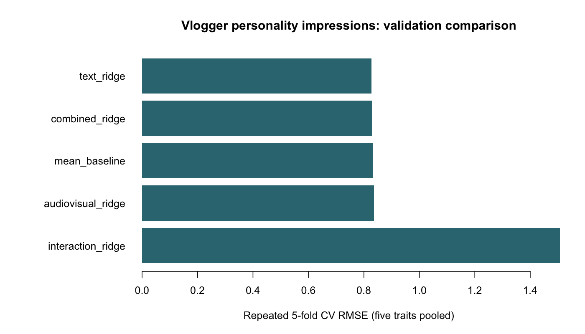

The question, methods & findings
Project overview
I studied whether transcripts and audiovisual features predict observers' Big Five personality impressions. The coursework data contain 324 labelled vloggers and 80 with withheld scores. I compared predefined feature sets with ridge regression, using five-fold cross-validation repeated five times and a fixed penalty of 10. The text model had a pooled RMSE of 0.827 across the five traits, compared with 0.834 for the training-fold mean baseline.
Results
| Specification | Pooled CV RMSE |
|---|---|
| Simple text features + ridge | 0.827 |
| Text + audiovisual features + ridge | 0.830 |
| Training-fold mean baseline | 0.834 |
| Audiovisual features + ridge | 0.836 |
| Combined features with quadratic terms + ridge | 1.507 |
I ran this comparison on 8 October 2026. The table comes from cv_comparison.csv. I report each trait separately in cv_by_trait.csv.

I assign each vlogger to one fold per repeat. I fit scaling and constant-feature removal within training folds. The text features are word count, sentence count, count of words with at least eleven letters, and type-token ratio. I use the supplied mean.* audiovisual features.
This is a new comparison with simpler features. My original group notebook used NRC emotion counts and stepwise selection. It reported training RMSE of 0.651 for an interaction model and a competition score of 0.845. Those scores come from a different workflow and are not the CV estimates above.
Limitations
The text model's improvement over the mean baseline is small, and I have no independent test score for this comparison. The fixed ridge penalty may not suit each feature set. Observer impressions do not measure clinical personality traits.
Credits
Project authors: Laura Maria Fetz, Roman Esseveld, and Bram le Fèbre. I loaded the data and prepared the test predictions. Roman and I worked on features; Bram and I worked on models, text, and figures.
The dataset and transcripts are credited to Biel and colleagues: The YouTube Lens and Hi YouTube!.
From the project documentation. Download the overview.
Read the analysis
Original notebook
This original coursework notebook contains code and explanations. Saved outputs are not included in this copy; the project overview above presents the current results.
Predicting personality impressions from vlogs
I explored transcript and audiovisual predictors of observers’ Big Five ratings. This is my original coursework notebook, with 324 labelled vloggers and eighty withheld cases. The current repeated-CV analysis uses a separate R script and simpler features.
Project authors: Laura Maria Fetz, Roman Esseveld, and Bram le Fèbre.
Read the data
I load the packages and transcript files.
R code Cell 03
# Loading packages
library(tidyverse)
library(tidytext)
# Listing files
list.files(path = "../input")
# Directory structure
master_dir = file.path(list.files('../input', full.names=TRUE), 'youtube-personality')
directory_content = list.files(master_dir, full.names = TRUE)
print(directory_content)
# Path to the transcripts directory with transcript .txt files
path_to_transcripts = directory_content[2]
# .csv filenames
AudioVisual_file = directory_content[3]
Gender_file = directory_content[4]
Personality_file = directory_content[5]I read each transcript and keep its vlogger identifier.
R code Cell 05
# Importing the transcripts
transcript_files = list.files(path_to_transcripts, full.names = TRUE)
print(head(transcript_files))
# Encoding the ID
vlogId = basename(transcript_files)
vlogId = str_replace(vlogId, pattern = ".txt$", replacement = "")
head(vlogId)
# Including features extracted from the transcript texts
transcripts_df = tibble(
# vlogId connects each transcripts to a vlogger
vlogId=vlogId,
# Read the transcript text from all file and store as a string
TEXT = map_chr(transcript_files, ~ paste(readLines(.x), collapse = "\\n")),
# `filename` keeps track of the specific video transcript
filename = transcript_files
)
# Inspecting the first two examples
transcripts_df %>%
head(2)Personality ratings
I read the five observer-rated personality scores.
R code Cell 07
# Import the Personality scores
pers_df = read_delim(Personality_file, delim=" ")
# Checking the data frame
head(pers_df)Gender labels
I read the supplied gender labels.
R code Cell 09
# Storing gender info
gender_df = read.delim(Gender_file, head=FALSE, sep=" ", skip = 2)
# Add column names
names(gender_df) = c('vlogId', 'gender')
# preview data
head(gender_df)Join the labels
I join the label tables by vlogger identifier.
R code Cell 11
# merging gender and pers with left_join
vlogger_df01 = left_join(gender_df, pers_df, by='vlogId')
# switching characters for numeric values for gender variable
vlogger_df01$gender[vlogger_df01$gender == "Female"] <- 1
vlogger_df01$gender[vlogger_df01$gender == "Male"] <- 0
# preview data
head(vlogger_df01)The eighty test vloggers have no personality labels. I retain them for later prediction.
Audiovisual features
I read the supplied audio and visual features.
R code Cell 14
# Importing the audio and visual information
AudioVisual_df <- read.delim(AudioVisual_file, sep = " ", head=TRUE)
# preview data
head(AudioVisual_df)I select the audiovisual features used in the following models.
Join the features
I join the audiovisual features to the label table.
R code Cell 17
# select all columns containing the mean
selected_columns <- grep("^mean", names(AudioVisual_df), value = TRUE)
# Join the selected columns to vlogger_df01
vlogger_df1 <- left_join(vlogger_df01, select(AudioVisual_df, vlogId, all_of(selected_columns)), by = 'vlogId')
# Print the first few rows of the resulting data frame
head(vlogger_df1)Extract transcript features
I followed the course text-analysis example to extract predictors from the transcripts.
Tokenize words
I split each transcript into word tokens.
R code Cell 20
# Tokenizing the transcripts into words
transcript_features_df =
transcripts_df %>%
unnest_tokens(token, TEXT, token = 'words')
# Creating a wordcloud to see the 100 most used words
transcript_features_df %>%
mutate(token = tolower(token)) %>%
count(token, sort= TRUE) %>%
with(., wordcloud::wordcloud(token, n, max.words = 100))Join token features
I join the transcript features to the vlogger table.
R code Cell 22
# Merging transcript_features_df with vlogger_df1
vlogger_df = left_join(vlogger_df1, transcript_features_df, by='vlogId') %>%
select(-filename)
# preview of data
head(vlogger_df)NRC emotion lexicon
I count words associated with the eight NRC emotions and positive or negative sentiment.
R code Cell 24
# adding lexicons from 'textdata' package
get_lexicon = function(lexicon_name = names(textdata:::download_functions)) {
lexicon_name = match.arg(lexicon_name)
textdata:::download_functions[[lexicon_name]]('.')
rds_filename = paste0(lexicon_name,'.rds')
textdata:::process_functions[[lexicon_name]]('.',rds_filename)
readr::read_rds(rds_filename)
}
# computing sentiment scores as features
nrc <- get_lexicon('nrc')
transcript_sentiment <- left_join(vlogger_df, nrc, by = c(token = 'word'), relationship='many-to-many')%>%
count(`vlogId`, sentiment) %>%
pivot_wider(id_cols = 'vlogId', names_from=sentiment, values_from=n, values_fill = 0) Remove stopwords
I remove common stopwords before counting lexicon matches.
R code Cell 26
# getting stopwords
stopwords <- get_stopwords()
# removing stopwords
transcript_features_df <- transcript_features_df %>%
anti_join(stopwords, by = c(token = "word"))
#creating a wordcloud to see the 100 most used words without stopwords
transcript_features_df %>%
count(token, sort= TRUE) %>%
with(., wordcloud::wordcloud(token, n, max.words = 100))Join emotion counts
I join the lexicon counts by vlogger identifier.
R code Cell 28
# merging our dataframe
data01 <- inner_join(vlogger_df1,transcript_sentiment, by = "vlogId")
# preview data
head(data01)Sentence features
I add the sentence-count feature.
R code Cell 30
# make a column that counts the length of a sentence by summing the words per vlog.
transcript_features_df_2 <-
transcripts_df %>%
unnest_tokens(sentences, TEXT, token = 'sentences') %>%
group_by(vlogId) %>%
summarize(sentences = n()) %>%
as_tibble()
# Merge the two data frames
data02 <- inner_join(data01, transcript_features_df_2, by = "vlogId")
# preview data
head(data02)Long words
I add the long-word feature defined in the code below.
R code Cell 32
# make a dataframe that counts the letters in each word:
word_length <- transcript_features_df %>%
select(vlogId, token) %>%
mutate(token = nchar(token))
# objectivly calculate what short and long words should be by calculating std
summary(word_length$token)
# creating a variable that contains the length of the words
word_length <- word_length %>%
mutate(long_word = token >= 11)
# creating a variable that contains long words
long_word_df <- word_length %>%
group_by(vlogId) %>%
summarize(long_words = sum(long_word))
# now adding the feature to the data
data <- data02 %>%
left_join(long_word_df, by = "vlogId")
# preview data
head(data)Fit regression models
I compare models using training RMSE pooled across the five traits. These are in-sample comparisons, separate from the repeated CV results in the README.
Additive model
I first include all candidate predictors. The original training RMSE was 0.742.
R code Cell 35
# building an additive model
mod_01 <- lm(cbind(Extr, Agr, Cons, Emot, Open) ~ gender + mean.pitch + mean.conf.pitch + mean.spec.entropy + mean.val.apeak + mean.loc.apeak + mean.num.apeak + mean.num.apeak + mean.energy + mean.d.energy + anger + anticipation + disgust + fear + joy + negative + positive + sadness + surprise + trust + sentences + long_words, data = data)
# print model summary
summary(mod_01)
# RMSE for the training dataset
(RMSE_01 <- sqrt(mean(mod_01$residuals^2)))Reduced additive model
I retain predictors selected from the first model. The original training RMSE was 0.754.
R code Cell 37
# building a second additive model
mod_02 <- lm(cbind(Extr, Agr, Cons, Emot, Open) ~ gender + mean.conf.pitch + mean.spec.entropy + mean.val.apeak + mean.loc.apeak + mean.num.apeak + mean.num.apeak + mean.energy + mean.d.energy + anger + anticipation + fear + joy + positive + surprise + sentences + long_words, data = data)
# print model summary
summary(mod_02)
# RMSE for the training dataset
(RMSE_02 <- sqrt(mean(mod_02$residuals^2)))Interaction model
I add interactions between predictors. Training RMSE fell to 0.651, but the submitted competition RMSE was 0.845. This gap suggested overfitting.
R code Cell 39
# building an interactive model
mod_03 <- lm(cbind(Extr, Agr, Cons, Emot, Open) ~ gender + mean.pitch * mean.conf.pitch + mean.spec.entropy + mean.val.apeak * mean.loc.apeak * mean.num.apeak * mean.num.apeak + mean.energy * mean.d.energy + anger * disgust * fear * negative * sadness + anticipation * joy * positive * surprise * trust + sentences * long_words, data = data)
# print model summary
summary(mod_03)
# RMSE for the training dataset
(RMSE_03 <- sqrt(mean(mod_03$residuals^2)))Correlation-based reduction
I inspect predictor correlations and remove selected correlated features. The original training RMSE was 0.762.
R code Cell 41
# Subsetting the features that could be correlated
corr_data <- data[, 8:28]
# Compute the correlation matrix
correlation_matrix <- cor(corr_data)
# Find highly correlated variables
highly_correlated_vars <- caret::findCorrelation(correlation_matrix, cutoff = 0.8)
# Print the highly correlated variables
print(highly_correlated_vars)
# Remove highly correlated variables from the correlation subset
corr_data <- corr_data[, -highly_correlated_vars]
# Remove the original columns 1 to 7 from the 'data' dataframe
data_cor <- data[, 1:7]
# Combine the modified 'corr_data' with the 'data' dataframe
data_cor <- cbind(data, corr_data)
# preview data
head(data_cor)
# Display the column names of the updated 'data' dataframe
colnames(data_cor)R code Cell 42
# building an additive model with remaining features
mod_04 <- lm(cbind(Extr, Agr, Cons, Emot, Open) ~ gender + mean.pitch + mean.conf.pitch + mean.spec.entropy + mean.val.apeak + mean.loc.apeak + mean.energy + mean.d.energy + disgust + fear + joy + surprise + sentences + long_words, data = data_cor)
# print model summary
summary(mod_04)
# RMSE for the training dataset
(RMSE_04 <- sqrt(mean(mod_04$residuals^2)))Stepwise regression
I use AIC to select a model with forward and backward steps. The original training RMSE was 0.790.
R code Cell 44
# List of response variables
response_vars <- c("Extr", "Agr", "Cons", "Emot", "Open")
# Create an empty list to store the stepwise models
stepwise_models <- list()
# Iterate over each response variable and fit a stepwise model
for (response_var in response_vars) {
# Create the formula for the current response variable
formula_str <- paste(response_var, "~ gender + mean.pitch + mean.conf.pitch + mean.spec.entropy +
mean.val.apeak + mean.loc.apeak + mean.num.apeak + mean.num.apeak + mean.energy + mean.d.energy +
anger + anticipation + disgust + fear + joy + negative + positive + sadness + surprise + trust +
sentences + long_words")
lm_formula <- as.formula(formula_str)
# Fit the linear model
lm_model <- lm(lm_formula, data = data)
# Perform stepwise regression
stepwise_model <- step(lm_model, direction = "both")
# Store the stepwise model in the list
stepwise_models[[response_var]] <- stepwise_model
}
# Access and view the summaries of the stepwise models
for (response_var in response_vars) {
cat("Summary for response variable:", response_var, "\n")
summary(stepwise_models[[response_var]])
cat("\n")
}
# best model based on smallest AIC
mod_05 <- lm(cbind(Extr, Agr, Cons, Emot, Open) ~ mean.loc.apeak + mean.num.apeak + anticipation + joy +
positive + sadness + trust, data = data)
# RMSE for the training dataset
(RMSE_05 <- sqrt(mean(mod_05$residuals^2)))Audiovisual features only
I fit the model without transcript features. The original training RMSE was 0.805.
R code Cell 46
# building a model only including audio and visual features
mod_6 <- lm(cbind(Extr, Agr, Cons, Emot, Open) ~ mean.pitch + mean.conf.pitch + mean.spec.entropy + mean.val.apeak + mean.loc.apeak + mean.num.apeak + mean.num.apeak + mean.energy + mean.d.energy, data = data)
# print model summary
summary(mod_6)
# RMSE for the training dataset
(RMSE_06 <- sqrt(mean(mod_6$residuals^2)))Transcript features only
I fit the model without audiovisual features. The original training RMSE was 0.776.
R code Cell 48
# building a model only including text features
mod_07 <- lm(cbind(Extr, Agr, Cons, Emot, Open) ~ anger + anticipation + disgust + fear + joy + negative + positive + sadness + surprise + trust + sentences + long_words, data = data)
# print model summary
summary(mod_07)
# RMSE for the training dataset
(RMSE_07 <- sqrt(mean(mod_07$residuals^2)))Compare training errors
I plot the in-sample RMSE values. The interaction model has the lowest training error, but this does not establish the lowest test error.
R code Cell 50
# combine RMSEs into one vector:
all_rmse <- c(RMSE_01, RMSE_02, RMSE_03, RMSE_04, RMSE_05, RMSE_06, RMSE_07)
# Names of the RMSE values
names <- c("MOD_01", "MOD_02", "MOD_03", "MOD_04", "MOD_05", "MOD_06", "MOD_07")
# Create a barplot with names on the X-axis and values on the Y-axis
barplot(all_rmse, names.arg = names, main = "RMSE Values", xlab = "RMSE Names", ylab = "RMSE Values", col = "grey")
Prepare the test set
I select the eighty vloggers with withheld personality scores.
R code Cell 52
# Creating a subset for test data
test_data = data %>%
filter(is.na(Extr))
# counting rows
nrow(test_data)Predict scores
I use the selected transcript model to predict the five traits.
R code Cell 54
# Prediction for test data
pred_mod_all = predict(mod_07, new = test_data)
# Compute output data frame
test_data_pred = test_data %>%
mutate(
Extr = pred_mod_all[,'Extr'],
Agr = pred_mod_all[,'Agr' ],
Cons = pred_mod_all[,'Cons'],
Emot = pred_mod_all[,'Emot'],
Open = pred_mod_all[,'Open']
) %>%
select(vlogId, Extr:Open)
# preview of data
head(test_data_pred)Export predictions
I reshape the predictions to the competition format.
R code Cell 56
# Converting our data to long format
test_data_pred_long <- test_data_pred %>%
pivot_longer(c(Extr, Agr, Cons, Emot, Open), names_to='pers_axis')
# Obtain the right format for Kaggle
test_data_pred_final <- test_data_pred_long %>%
unite(Id, vlogId, pers_axis) %>%
rename(Expected = value)
# Check if we succeeded
head(test_data_pred_final)R code Cell 57
# Write to csv
write_csv(test_data_pred_final, file = "predictions_07.csv")
# Check if the file was written successfully.
dir()Dataset credits
I used the YouTube Personality Dataset. The transcript source is Biel, Tsiminaki, Dines, and Gatica-Perez (2013), Hi YouTube! (DOI). The audiovisual source is Biel and Gatica-Perez (2013), The YouTube Lens (DOI). I do not include the dataset or cached transcript outputs in this repository.
Project credits
Project authors: Laura Maria Fetz, Roman Esseveld, and Bram le Fèbre. I loaded the data and prepared the test predictions. Roman and I worked on features. Bram and I worked on models, text, and figures.
R code Cell 60
# 1. Define project paths
project_name <- "Kaggle_Project"
project_dir <- file.path("/kaggle/working", project_name)
dir.create(project_dir, recursive = TRUE, showWarnings = FALSE)
# 2. Copy source datasets
data_dir <- file.path(project_dir, "data")
dir.create(data_dir, showWarnings = FALSE)
if (dir.exists("/kaggle/input")) {
system2(
"cp",
c("-R", "/kaggle/input/.", shQuote(data_dir))
)
}
# 3. Copy generated outputs
output_dir <- file.path(project_dir, "outputs")
dir.create(output_dir, showWarnings = FALSE)
files <- list.files(
"/kaggle/working",
full.names = TRUE,
all.files = TRUE,
no.. = TRUE
)
files <- files[
!basename(files) %in% c(
project_name,
paste0(project_name, ".zip")
)
]
file.copy(
files,
output_dir,
recursive = TRUE,
overwrite = TRUE
)
# 4. Create ZIP archive
zip_path <- file.path(
"/kaggle/working",
paste0(project_name, ".zip")
)
if (file.exists(zip_path)) file.remove(zip_path)
system2(
"zip",
c("-rq", shQuote(zip_path), shQuote(project_name)),
stdout = TRUE
)
# 5. Verify ZIP creation
if (file.exists(zip_path)) {
cat("ZIP created successfully:\n", zip_path)
cat("\nDownload it from the Kaggle Output files.")
} else {
stop("ZIP creation failed.")
}